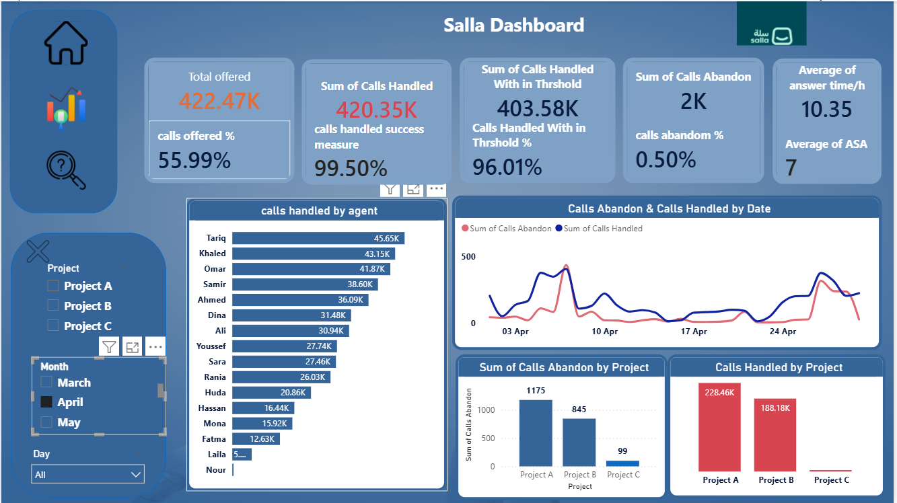
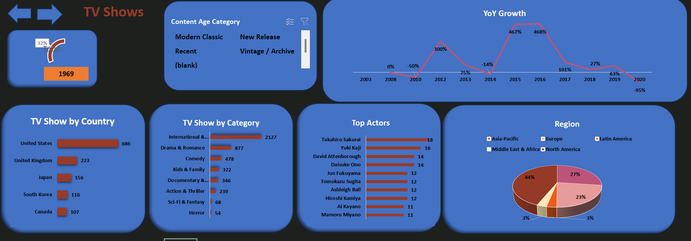
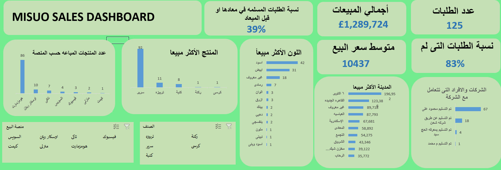

My projects focus on data cleaning, exploratory data analysis, dashboard development, and business performance reporting using SQL, Python, Microsoft Excel, Power BI, and Tableau.
I enjoy exploring datasets, identifying trends, analyzing key performance indicators, and presenting findings through clear and interactive visualizations.
Technical Skills
- Data Analysis: Data Cleaning, EDA, Data Visualization
- Programming: Python, Pandas, NumPy, Matplotlib.pyplot, Seaborn
- Databases: MSQL Server
- Business Intelligence: Power BI, Tableau
- Spreadsheets: Microsoft Excel, Pivot Tables, Formulas
Featured Project
An interactive Power BI dashboard designed to analyze call center operations, monitor key performance indicators, and evaluate customer service performance.


An interactive dashboard analyzing sales, profitability, quantities, discounts, and product performance. The project includes interactive filters, What-If analysis, and a decomposition tree to support data-driven business decisions.

An Excel-based analysis of Netflix movies and TV shows. The project focuses on data cleaning, data transformation, and exploring content distribution and trends across the platform's library.

A sales analytics dashboard designed to monitor sales performance, order fulfillment rates, product-line performance, regional distribution, and sales channel efficiency.

An interactive Tableau dashboard analyzing revenue, profitability, customer segments, and regional sales performance. It also explores the relationship between discounts and profit margins across product categories.
Social Media Data Analysis Report
Python Data Analysis Report (PDF)
A Python project involving data cleaning, exploratory data analysis,
and visualization of social media performance across multiple Middle
Eastern cities. The analysis explores post reach, engagement, and
differences between post types and locations.